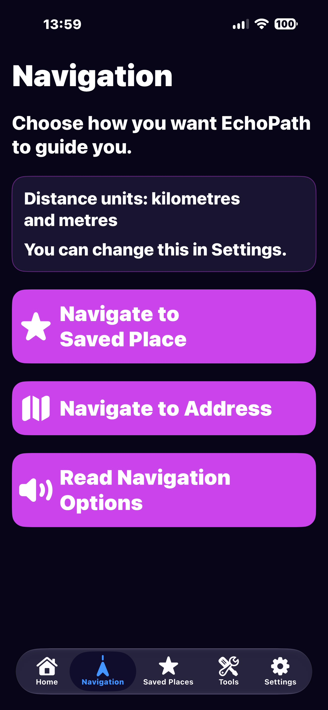
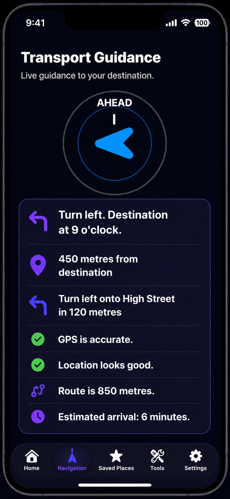
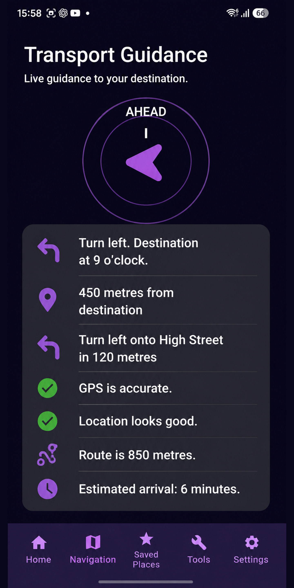

Navigation
Choose a route that fits the journey.
EchoPath can adapt the travel choices it presents based on trip distance and supports multiple navigation paths on iOS.
Trip-aware travel choices
EchoPath avoids showing every transport option for every destination. Shorter trips can focus on walking, driving and taxi choices, while longer journeys can expose relevant public transport options.
Travel choices are filtered so the navigation flow stays useful and understandable.
Providers
Apple and Google navigation options.
On iOS, EchoPath integrates Apple Maps handoff alongside supported navigation providers SDK experiences. External mapping services support route calculations and place search.
During navigation
Accessible information without an overloaded screen.
The iOS navigation interface prioritises the map while keeping destination, remaining distance, estimated time, status reading, recentering and stop controls accessible.



Navigation remains assistive information.
Routes, GPS, map data and spoken instructions may be delayed or inaccurate. EchoPath should not be relied on as the sole means of safe travel.